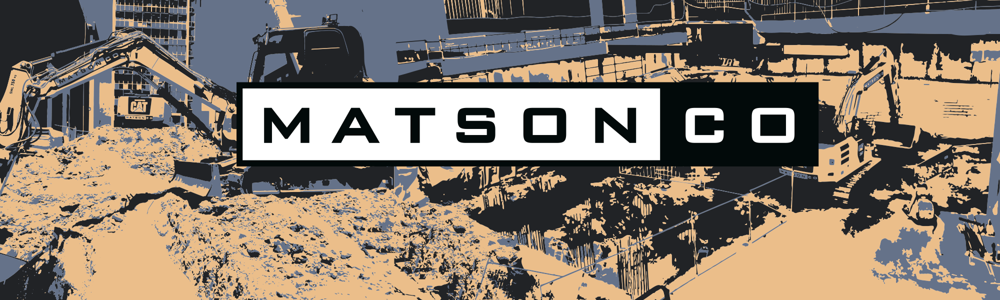

WORKS INCLUDE
Civil construction project management and onsite supervision
Site surveying (volume calculations, detail surveys, 3D designs and computations)
Calculated work costs and estimates
Budgets, schedules and time frames
Detailed contracts and technical information
Processing solutions for delays or discrepancies
Ensuring the project fulfills all safety codes
Increase efficiency and productivity through advanced workplace technology
AREAS OF EXPERTISE
Bulk Excavation
Slab Preparation
Site Remediation (including level 1 testing)
Shopping Centre Carpark Upgrades
Greenfield Projects
Carpark Realignments
Local Government Infrastructure
Pavement Redesign or Rectification
Stormwater Drainage
Bitumen Pavement Preparation and Hardstands